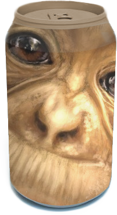
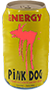

| Product | Description | Photo |
|---|
| Monkey man soda | Our flagship, the monkey-man soda, will satisfy all your energy drink requirements.
Sleepy, tired, worn-out, unhappy in general? Check, check and check again - our monkey drink will solve all your energy drink requirements. |

|
| Sail Soda | This energy drink, slash soda, is as original as it gets. Like sailing? Then you'll probably enjoy this beverage as well.
Made for everyone at sea, by things from the sea! Scallops and cod, were in other words part of the production process.
|
|
| Flattery | Despite our series of energy drinks being new, this specific drink was one of our major breakthroughs a while back.
Had it not been for this highly potent drink, our business might not have had such success! Flattery contains about fourteen times as much
berries as your average can of Battery© - which is exactly why it's so different!
|
|
| Clut | Forged out of rainwater, combined with sugar and with a hint of soy sauce - we present the Clut© drink.
Only to be consumed when your spirits are truly weak, and you know for sure your heart is not susceptible for an attack. Tastes great!
|
|
| Crazy Bull | Another invention of ours, the (very) Crazy Bull© energy drink! We pretty much just bought a bunch of
Red Bull, added more sugar - and made a profit (???).
|
|
| Pink Dog | Also known as 'Not a Dog', this very energy drink can keep an entire family of twelve awake for as long as a whole day.
One small taste will actually kill you if you're old and weak. Tastes perfect!
|
 |